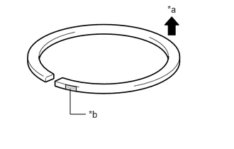

1GR-FE ENGINE MECHANICAL CYLINDER BLOCK INSPECTION
PROCEDURE

 11401
1.CLEAN CYLINDER BLOCK SUB-ASSEMBLY
11401
1.CLEAN CYLINDER BLOCK SUB-ASSEMBLY
Using a gasket scraper, remove all the gasket material from the top surface of the cylinder block sub-assembly.
Using a soft brush and solvent, thoroughly clean the cylinder block sub-assembly.
- NOTICE:
-
If the cylinder is washed at high temperatures, the cylinder liner sticks out beyond the cylinder block sub-assembly. Always wash the cylinder block sub-assembly at a temperature of 45°C (113°F) or less.
2.INSPECT CYLINDER BLOCK FOR FLATNESS
Using a precision straightedge and feeler gauge, measure the warpage of the contact surface of the cylinder head gasket.
- Maximum warpage:
0.05 mm (0.00197 in.)
If the warpage is more than the maximum, replace the cylinder block sub-assembly.
3.INSPECT CYLINDER BORE
| *a | Engine Front |
| *b | Thrust Direction |
| *c | Axial Direction |
| *d | Center |
| *e | 10 mm (0.394 in.) |
Using a cylinder gauge, measure the cylinder bore diameter at positions A and B in the thrust and axial directions.
- Reference diameter (new parts):
94.000 to 94.012 mm (3.7008 to 3.7013 in.)
- Maximum diameter:
94.132 mm (3.7060 in.)
If the diameter is more than the maximum, replace the cylinder block sub-assembly.
4.INSPECT PISTON DIAMETER
| *a | 27.7 mm (1.09 in.) |
Using a micrometer, measure the piston diameter at a right angle to the piston pin center line, 27.7 mm (1.09 in.) from the piston head.
- Reference piston diameter (new part):
93.910 to 93.920 mm (3.6972 to 3.6976 in.)
5.INSPECT PISTON OIL CLEARANCE
Subtract the piston diameter measurement from the cylinder bore diameter measurement.
- Reference oil clearance (new part):
0.080 to 0.102 mm (0.00315 to 0.00402 in.)
- Maximum oil clearance:
0.13 mm (0.00512 in.)
If the oil clearance is more than the maximum, replace all 6 pistons. If necessary, replace the cylinder block sub-assembly.
6.INSPECT RING GROOVE CLEARANCE
Using a feeler gauge, measure the clearance between a new piston ring and the wall of the ring groove.
- Standard Ring Groove Clearance:
Item Specified Condition No. 1 compression ring 0.02 to 0.07 mm (0.000787 to 0.00276 in.) No. 2 compression ring 0.02 to 0.06 mm (0.000787 to 0.00236 in.) Oil ring 0.07 to 0.15 mm (0.00276 to 0.00591 in.)
If the clearance is not as specified, replace the piston with pin sub-assembly and piston ring set.
7.INSPECT PISTON RING END GAP
Using a piston, push the piston ring a little beyond the bottom of the ring travel, 110 mm (4.33 in.) from the top of the cylinder block sub-assembly.
Using a feeler gauge, measure the end gap.
- Standard End Gap (for Type A):
Item Specified Condition No. 1 compression ring 0.30 to 0.40 mm (0.0118 to 0.0157 in.) No. 2 compression ring 0.40 to 0.50 mm (0.0157 to 0.0197 in.) Oil ring (side rail) 0.10 to 0.40 mm (0.00394 to 0.0157 in.)
- Standard End Gap (for Type B):
Item Specified Condition No. 1 compression ring 0.22 to 0.32 mm (0.00866 to 0.0126 in.) No. 2 compression ring 0.35 to 0.45 mm (0.0138 to 0.0177 in.) Oil ring (side rail) 0.10 to 0.40 mm (0.00394 to 0.0157 in.)
- Maximum End Gap:
Item Specified Condition No. 1 compression ring 1.0 mm (0.0394 in.) No. 2 compression ring 1.1 mm (0.0433 in.) Oil ring (side rail) 1.0 mm (0.0394 in.)
- HINT:
-
1.031,1.302 1.031,1.677 1.031,1.677 1.26,1.677 false 2.458,0.052 2.771,0.208 0.313,0.156 10 false *a 1.302,1.594 1.615,1.75 0.313,0.156 10 false *b
*a Upward *b Paint Mark
-
Type A and type B can be distinguished by the color of their paint marks.
Item Paint Mark Type A No. 1 compression ring - No. 2 compression ring Orange Type B No. 1 compression ring Sky Blue No. 2 compression ring Sky Blue
If the end gap is more than the maximum, replace the piston ring set.
8.INSPECT PISTON PIN OIL CLEARANCE
Check each mark on the piston and connecting rod sub-assembly.
| *a | Inside Diameter Mark | *b | Front Mark |
Using a caliper gauge, measure the inside diameter of the piston pin hole.
- Standard Piston Pin Hole Inside Diameter:
Item Specified Condition Mark A 22.001 to 22.004 mm (0.86618 to 0.86630 in.) Mark B 22.005 to 22.007 mm (0.86634 to 0.86642 in.) Mark C 22.008 to 22.010 mm (0.86645 to 0.86653 in.)
Using a micrometer, measure the piston pin diameter.
- Standard Piston Pin Diameter:
Item Specified Condition Mark A 21.997 to 22.000 mm (0.86602 to 0.86614 in.) Mark B 22.001 to 22.003 mm (0.86618 to 0.86626 in.) Mark C 22.004 to 22.006 mm (0.86630 to 0.86638 in.) Mark D 22.007 to 22.009 mm (0.86642 to 0.86649 in.)
| *a | 5.0 mm (0.197 in.) | *b | 28 mm (1.10 in.) |
Subtract the piston pin diameter measurement from the piston pin hole diameter measurement.
- Standard oil clearance:
0.001 to 0.007 mm (0.0000394 to 0.000276 in.)
- Maximum oil clearance:
0.040 mm (0.00157 in.)
If the oil clearance is more than the maximum, replace the piston with pin sub-assembly.
Using a caliper gauge, measure the inside diameter of the connecting rod bush.
- Standard Bush Inside Diameter:
Item Specified Condition Mark A 22.005 to 22.008 mm (0.86634 to 0.86645 in.) Mark B 22.009 to 22.011 mm (0.86649 to 0.86657 in.) Mark C 22.012 to 22.014 mm (0.86661 to 0.86669 in.)
Subtract the piston pin diameter measurement from the bush inside diameter measurement.
- Standard oil clearance:
0.005 to 0.011 mm (0.000197 to 0.000433 in.)
- Maximum oil clearance:
0.050 mm (0.00197 in.)
If the oil clearance is more than the maximum, replace the connecting rod sub-assembly and piston with pin sub-assembly.
13411
9.INSPECT CRANKSHAFT
Using a dial indicator and V-blocks, measure the runout as shown in the illustration.
- Maximum circle runout:
0.06 mm (0.00236 in.)
If the circle runout is more than the maximum, replace the crankshaft.
Using a micrometer, measure the diameter of each main journal as shown in the illustration.
- Standard diameter:
71.988 to 72.000 mm (2.8342 to 2.8346 in.)
If the diameter is not as specified, check the oil clearance. If necessary, replace the crankshaft.
Inspect each main journal for taper and out-of-round.
- Maximum taper and out-of-round:
0.02 mm (0.000787 in.)
If the taper and out-of-round is more than the maximum, replace the crankshaft.
Using a micrometer, measure the diameter of each crank pin.
- Standard diameter:
55.992 to 56.000 mm (2.2044 to 2.2047 in.)
If the diameter is not as specified, check the oil clearance. If necessary, replace the crankshaft.
Check each crank pin for taper and out-of-round as shown in the illustration.
- Maximum taper and out-of-round:
0.02 mm (0.000787 in.)
If the taper and out-of-round is more than the maximum, replace the crankshaft.
10.INSPECT CRANKSHAFT OIL CLEARANCE
Install the crankshaft bearing.
Place the crankshaft on the cylinder block sub-assembly.
Install the crankshaft thrust washer.
| *a | Plastigage |
Lay a strip of Plastigage across each journal.
- NOTICE:
-
Do not turn the crankshaft.
Install the crankshaft bearing cap.
Remove the crankshaft bearing cap.
Measure the Plastigage at its widest point.
- Standard oil clearance:
0.018 to 0.030 mm (0.000709 to 0.00118 in.)
- Maximum clearance:
0.046 mm (0.00181 in.)
- NOTICE:
-
After checking, completely remove the Plastigage.
If the oil clearance is more than the maximum, replace the crankshaft bearings. If necessary, replace the crankshaft.
| *a | No. 1 | *b | No. 2 |
| *c | No. 3 | *d | No. 4 |
| *e | Number Mark | - | - |
- HINT:
- ·
If replacing a bearing, replace it with one that has the same number.
·If the number of the bearing cannot be determined, select the correct bearing by adding together the numbers imprinted on the cylinder block and crankshaft, then refer to the table below for the appropriate bearing number.
Example: Cylinder block "11" (A) + Crankshaft "06" (B) = Total number 17 (Use bearing "3")
·There are 5 sizes of standard bearings, marked "1", "2", "3", "4" and "5" accordingly.
- New Bearing:
Use Bearing 1 2 3 4 5 Cylinder Block (A) + Crankshaft (B) 0 to 5 6 to 11 12 to 17 18 to 23 24 to 28
- Cylinder Block Main Journal Bore Diameter (A):
Item Specified Condition Mark 00 77.000 mm (3.03149 in.) Mark 01 77.001 mm (3.03153 in.) Mark 02 77.002 mm (3.03157 in.) Mark 03 77.003 mm (3.03161 in.) Mark 04 77.004 mm (3.03165 in.) Mark 05 77.005 mm (3.03169 in.) Mark 06 77.006 mm (3.03173 in.) Mark 07 77.007 mm (3.03177 in.) Mark 08 77.008 mm (3.03180 in.) Mark 09 77.009 mm (3.03184 in.) Mark 10 77.010 mm (3.03188 in.) Mark 11 77.011 mm (3.03192 in.) Mark 12 77.012 mm (3.03196 in.) Mark 13 77.013 mm (3.03200 in.) Mark 14 77.014 mm (3.03204 in.) Mark 15 77.015 mm (3.03208 in.) Mark 16 77.016 mm (3.03212 in.)
- Crankshaft Main Journal Diameter (B):
Item Specified Condition Mark 00 71.999 to 72.000 mm (2.83460 to 2.83464 in.) Mark 01 71.998 to 71.999 mm (2.83456 to 2.83460 in.) Mark 02 71.997 to 71.998 mm (2.83452 to 2.83456 in.) Mark 03 71.996 to 71.997 mm (2.83448 to 2.83452 in.) Mark 04 71.995 to 71.996 mm (2.83444 to 2.83448 in.) Mark 05 71.994 to 71.995 mm (2.83440 to 2.83444 in.) Mark 06 71.993 to 71.994 mm (2.83436 to 2.83440 in.) Mark 07 71.992 to 71.993 mm (2.83433 to 2.83436 in.) Mark 08 71.991 to 71.992 mm (2.83429 to 2.83433 in.) Mark 09 71.990 to 71.991 mm (2.83425 to 2.83429 in.) Mark 10 71.989 to 71.990 mm (2.83421 to 2.83425 in.) Mark 11 71.988 to 71.989 mm (2.83417 to 2.83421 in.)
- Standard Bearing Center Wall Thickness:
Item Specified Condition Mark 1 2.488 to 2.491 mm (0.0980 to 0.0981 in.) Mark 2 2.491 to 2.494 mm (0.0981 to 0.0982 in.) Mark 3 2.494 to 2.497 mm (0.0982 to 0.0983 in.) Mark 4 2.497 to 2.500 mm (0.0983 to 0.0984 in.) Mark 5 2.500 to 2.503 mm (0.0984 to 0.0985 in.)
Remove the crankshaft thrust washer.
Remove the crankshaft bearing.
13201
11.INSPECT CONNECTING ROD SUB-ASSEMBLY
Using a rod aligner and feeler gauge, check the connecting rod sub-assembly alignment.
Check for bend.
- Maximum bend:
0.05 mm (0.00197 in.) per 100 mm (3.94 in.)
If the bend is more than the maximum, replace the connecting rod sub-assembly.
Check for twist.
- Maximum twist:
0.15 mm (0.00591 in.) per 100 mm (3.94 in.)
If the twist is more than the maximum, replace the connecting rod sub-assembly.
13265
12.INSPECT CONNECTING ROD BOLT
Check that there is no damage or deformation on the threads of the connecting rod bolt.
- HINT:
-
If there is any damage or deformation, replace the connecting rod bolt.
| *a | Measurement Area |
Using a vernier caliper, measure the diameter of the connecting rod bolt in the area shown in the illustration.
- Standard diameter:
7.2 to 7.3 mm (0.283 to 0.287 in.)
- Minimum diameter:
7.0 mm (0.276 in.)
- HINT:
-
Diameter measurements should be done at several points.
If the diameter is less than the minimum, replace the connecting rod bolt with a new one. Failure to do so may lead to engine damage.
11416
13.INSPECT CRANKSHAFT BEARING CAP SET BOLT
Check that there is no damage or deformation on the threads of the crankshaft bearing cap set bolt.
- HINT:
-
If there is any damage or deformation, replace the crankshaft bearing cap set bolt.
| *a | Measuring Area |
| *b | 60 mm (2.36 in.) |
Using a vernier caliper, measure the thread outside diameter of the crankshaft bearing cap set bolt in the measuring area.
- Standard diameter:
10.0 to 10.2 mm (0.394 to 0.402 in.)
If the diameter is less than the minimum, replace the crankshaft bearing cap set bolt. Failure to do so may lead to engine damage.
15708
14.INSPECT NO. 1 OIL NOZZLE SUB-ASSEMBLY
Push the check valve with a pin to check if it is stuck. If stuck, replace the No. 1 oil nozzle sub-assembly.
Push the check valve with a pin to check if it moves smoothly.
If it does not move smoothly, clean or replace the No. 1 oil nozzle sub-assembly.
While covering A, blow air into B. Check that air does not leak through C. Perform the check again while covering B and blowing air into A.
If air leaks, clean or replace the No. 1 oil nozzle sub-assembly.
Push the check valve while covering A, and blow air into B. Check that air passes through C. Perform the check again while covering B, pushing the check valve and blowing air into A.
If air does not pass through C, clean or replace the No. 1 oil nozzle sub-assembly.